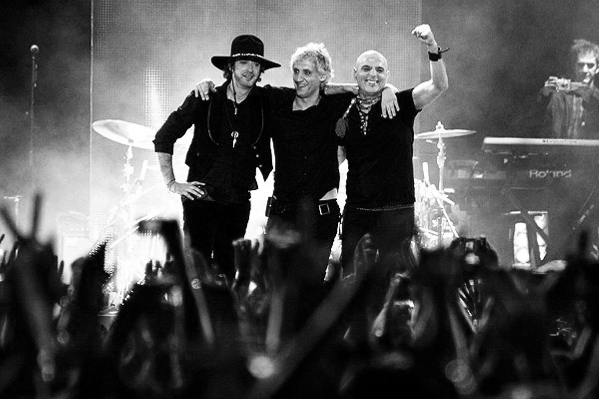
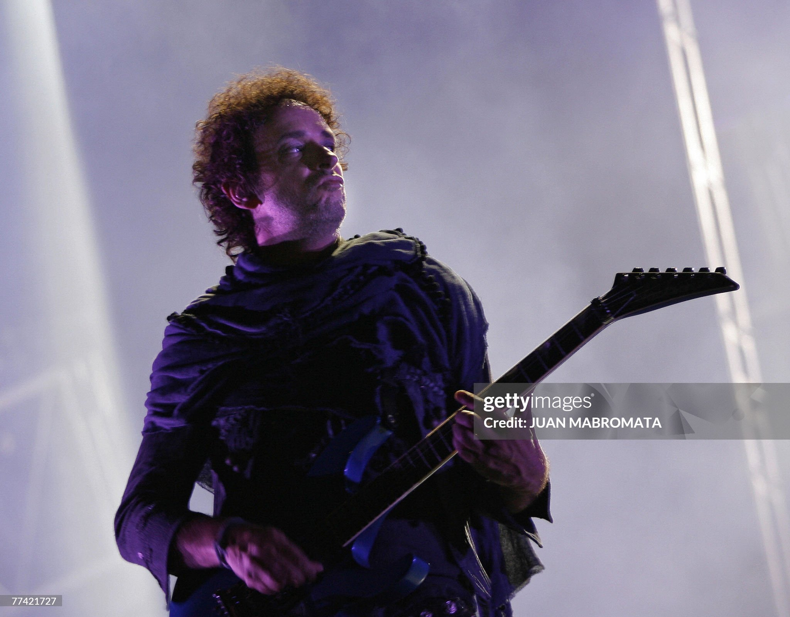

ODASTEREO
GIRA ME VERAS VOLVER

LA GIRA
La gira Me Verás Volver marcó el regreso de Soda Stereo en 2007, después de casi diez años de separación. El anuncio generó una gran expectativa en toda Latinoamérica y rápidamente se convirtió en un evento masivo, con shows en estadios y miles de personas en cada presentación.
Durante los conciertos, la banda recorrió los temas más importantes de su carrera, con una puesta en escena cuidada y un sonido a la altura del momento. Más que una serie de recitales, la gira fue un reencuentro entre el grupo y su público.
CERATI
Para Gustavo Cerati, esta gira tuvo un significado especial, ya que fue su última vez tocando en vivo con Soda Stereo. Después de años dedicado a su carrera solista, este regreso funcionó como un cierre de etapa junto a la banda.
Con el tiempo, estos shows tomaron aún más valor, al convertirse en la última oportunidad de verlo interpretar esas canciones con el grupo, dejando una despedida muy recordada por el público.
